Growing Optik TV Daily Orders from 200 to 2,500+
I designed a native mobile experience to replace a failing web portal causing negative app feedback and support calls. Conducted research to identify customer pain points and multiple rounds of user testing to validate designs. This grew daily orders from 200 to 2,500+ and made mobile the primary channel. The success of this project led to me becoming the lead designer for TV products (Optik TV & Pik TV) in the My TELUS App.
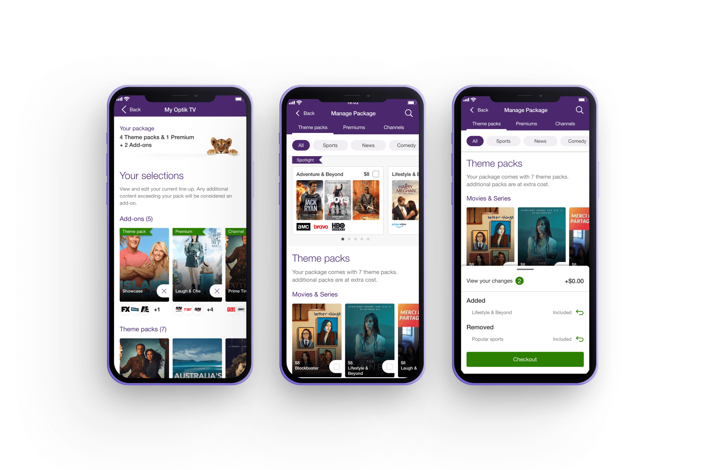
Context
Optik TV Allows Customers to Customize and Swap Channel Bundles Within Their TV Subscription
Optik TV is a customizable TV subscription built around theme packs (curated channel bundles) and premium selections (Netflix, HBO, etc.). Customers pick a base plan, then build their lineup from there.
You can swap content of equal value at any time without changing your monthly bill or add additional content at a cost. A built-in Rightsizing feature automatically bundles channels into cheaper packs or adjusts your plan tier so you always get the best deal.
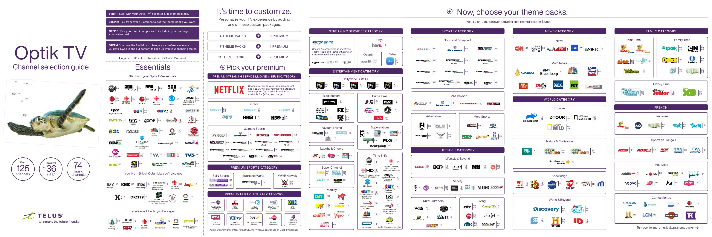
Problem
A Failing Web Portal
The existing web portal for managing Optik TV subscriptions was a dying legacy platform. Customers experienced confusing workflows when editing their subscriptions and encountered submission errors that forced them to call support to complete their orders. The My TELUS App linked out to this experience, and customers complained the app wasn't working properly, negatively affecting the app's reputation.
This created an opportunity to redesign the experience as a native feature within the My TELUS App, providing customers with a modern, reliable platform for Optik TV management.
Research
Uncovering the Customer's Frustrations
We analyzed support calls, interviewed agents and found three consistent pain points:
Rigid Order Flow
Managing theme packs, premiums, then channels in a fixed order felt more annoying than helpful.
Unexplained Swaps
Rightsizing messages like "We swapped Theme Pack A for Theme Pack B" gave customers no context as to why.
Dead-End Error Messages
Backend failures pushed users to "Please Contact Support" with no context on what went wrong or what to do next.
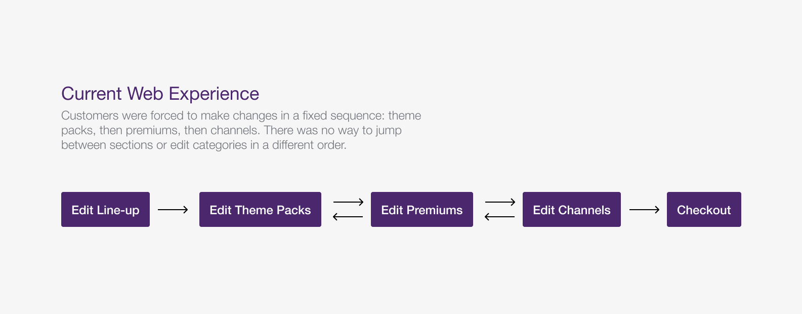
Mapping Customer's Thoughts
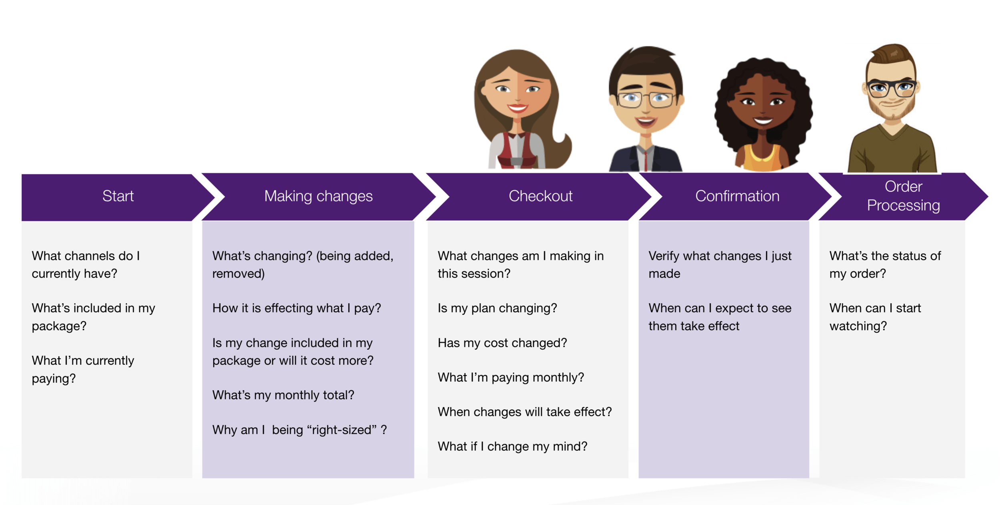
Validation
Validating Our Designs with User Testing
We validated our initial designs with a mix of 10 existing Optik customers and non-Optik users. They were asked to complete various tasks, from understanding their current plan, making changes to their current subscription and confirming their changes.
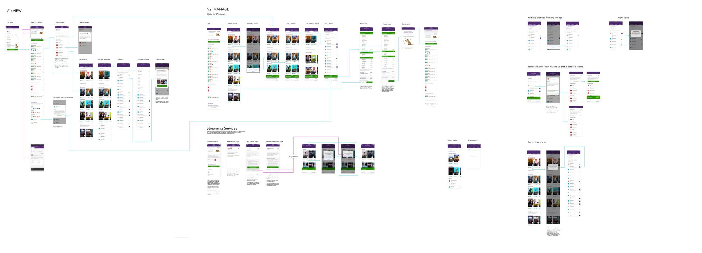
Testing Summary
- Users understood their plan and monthly costs immediately
- Theme pack and premium cards required more time to interact with compared to the channel list. We made the add and remove actions more prominent to improve clarity
- Rightsizing notifications initially surprised non-Optik users, but they understood the change and reasoning after reading the new messaging
Solution
Rolling Out the New Designs
View Your Subscription
I designed a native subscription view directly within the My TELUS App, allowing customers to view their current plan, monthly price, full channel line-up, and individual channel details without being redirected to the web portal.
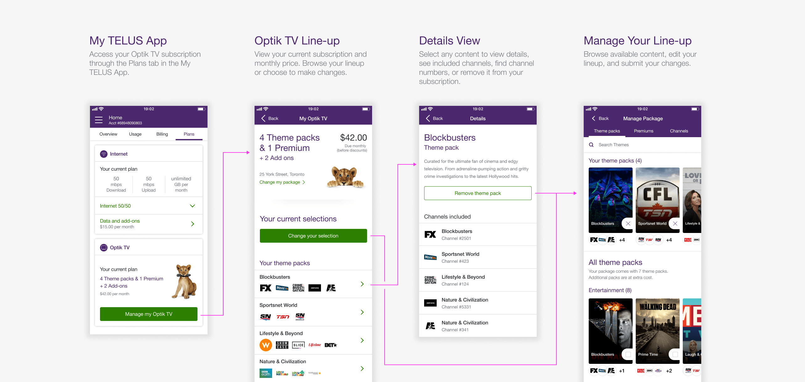
Manage Your Line-up
To address the restrictive guided flow, customers can now browse all content and modify their line-up freely in any order they choose. Content can be swapped for equal value items or added as paid add-ons with clear pricing updates, giving customers control rather than forcing them through a rigid sequence.
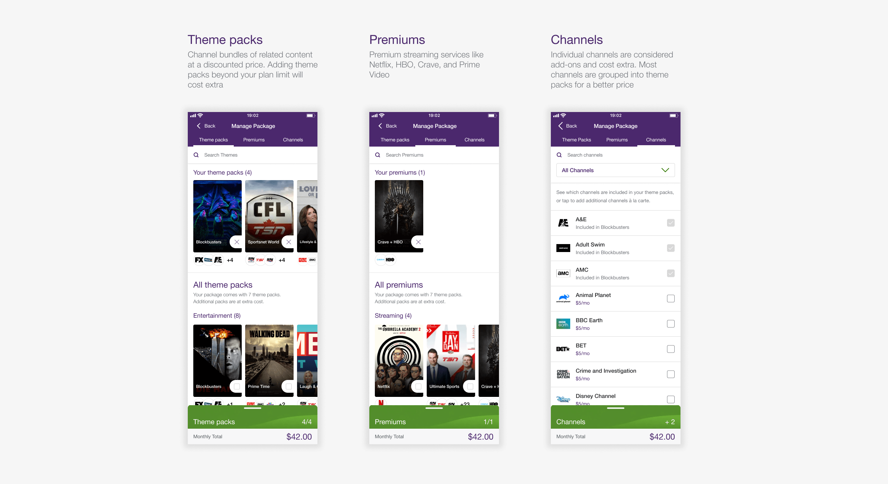
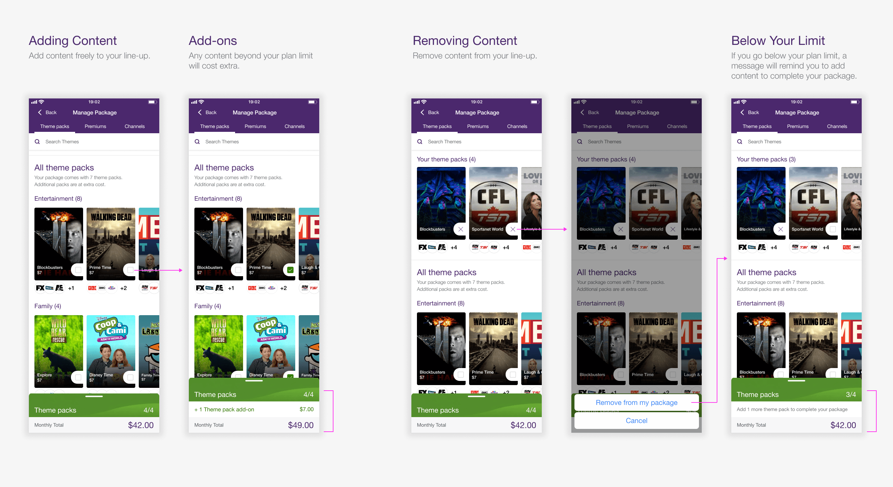
Cart and Checkout
I added a persistent cart that tracks changes and displays the updated monthly price throughout the session. Customers can review all changes before submitting their order, providing transparency.
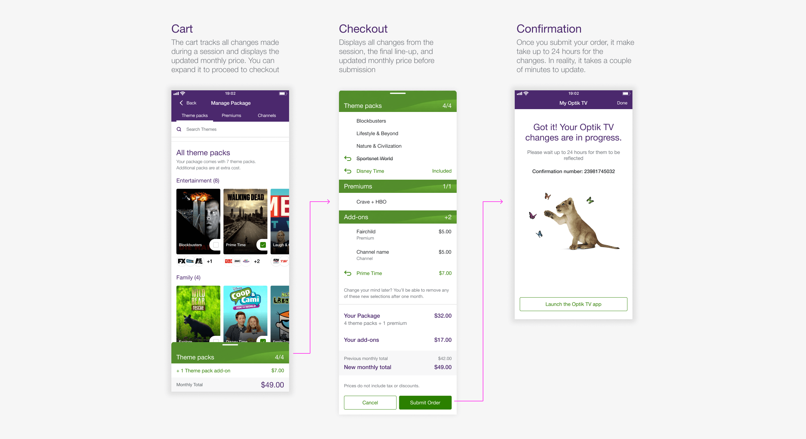
Rightsizing
To address customer confusion around automatic plan changes, I redesigned the messaging to provide clear context explaining why changes occurred and confirming customers receive the best price.
During design, we also discovered the system wasn't downsizing plans to save money as advertised. Working with engineering, we fixed backend errors that prevented proper rightsizing, significantly reducing error messages customers encountered.
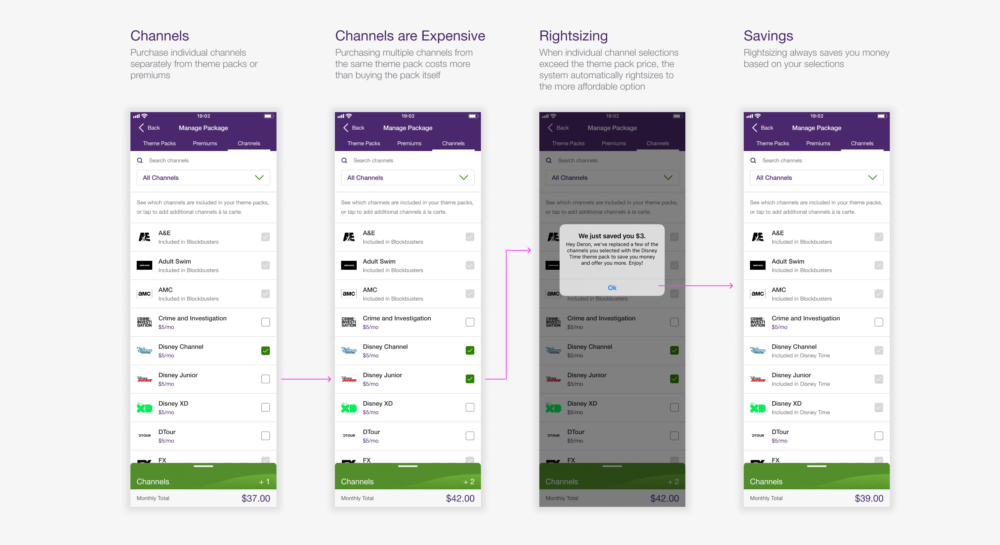
Impact
Growing Optik TV Daily Orders from 200 to 2,500+
Before the native experience, the web portal averaged around 200 orders a day. Daily mobile orders from the new experience grew from around 200 at launch to 500+ within weeks, eventually reaching 2,500+ during the 2020 lockdowns. Mobile quickly became the primary channel for managing Optik TV, with support agents recommending customers use the My TELUS App instead of the web portal to manage their subscriptions.
The success of this project led to me becoming the lead designer for TV products across the app, which included Pik TV and a second iteration of Optik TV in summer 2020.
Opportunity
Opportunity for a Second Iteration
After launch we got a chance to go back and improve the product in August 2020. A round of external research and customer feedback pointed to gaps that went beyond basic functionality.
What We Heard
- Hard to discover new or trending content
- Unclear which content was already owned vs. available to add
- Difficult to track changes made within a single session
- No indication of when updates would actually show up on the TV
How We Approached It
- Spotlight Section - A curated area for featured and trending content, paired with universal search and genre filtering so the full catalogue felt easy to explore
- Tracker Widget - A persistent tracker showing how many items you own in each category. Tapping on it opens your current line-up
- Dynamic Cart - A cart that only logs changes in this session with price updates, so customers always know what they were committing to
- Setting Expectations - A confirmation informing customers when their TV changes will take effect
Second Iteration Improvements
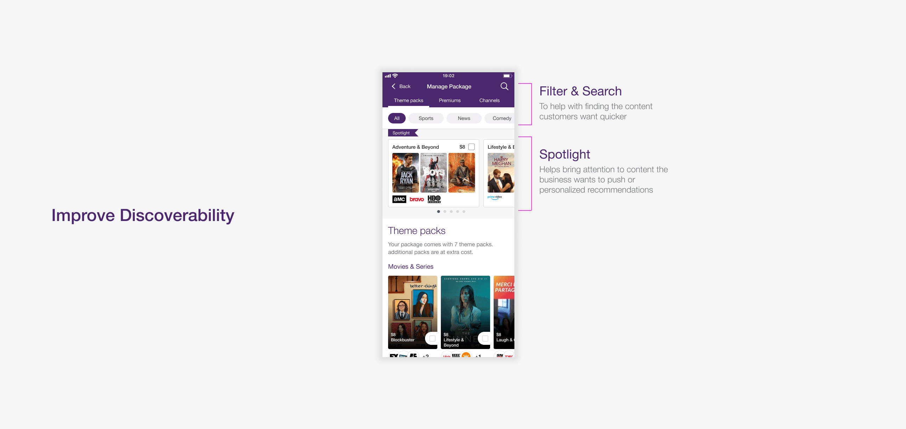
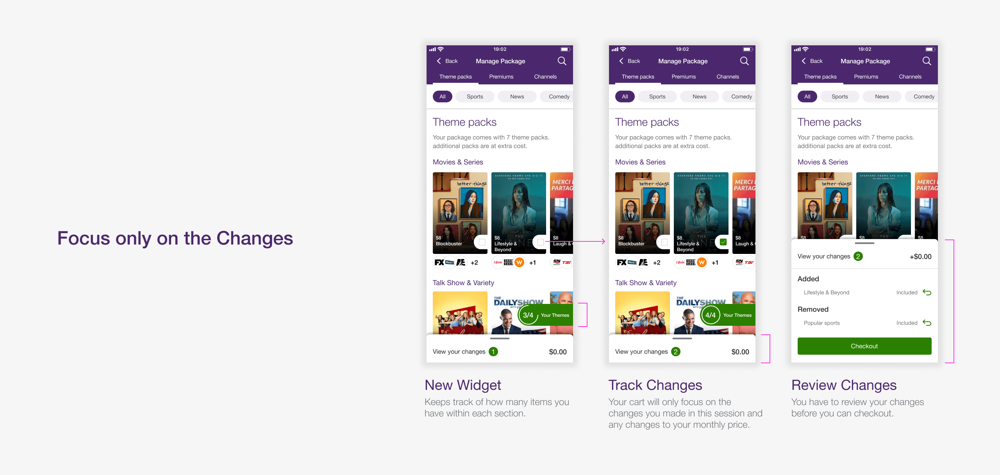
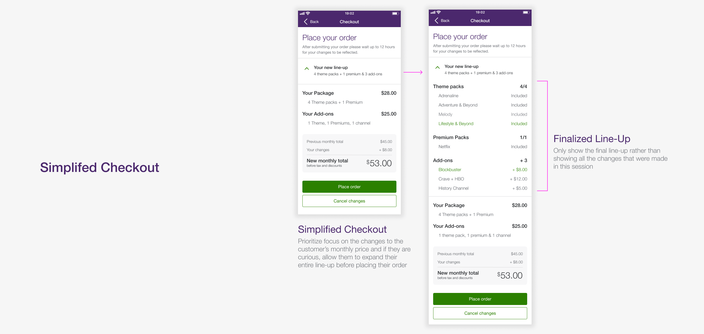
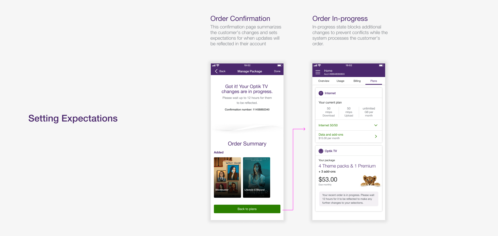
Reflection
A Rare Chance to Iterate
We tested the second iteration with 10 participants. Key findings showed that Optik-specific terminology still confused non-Optik customers, and several participants expected removed items to disappear immediately from the Selections page rather than remain visible. We incorporated this feedback into the final release.
It's uncommon to launch a major feature and get another chance to improve it within the same year. Development was still underway when I transitioned off the My TELUS App team, with the release following in spring 2021. I reached out later for results, but it was too early for meaningful data.
The most rewarding part was introducing motion to the Optik experience. I focused on making it purposeful, using animation to communicate what was happening in the interface rather than adding it as decoration.